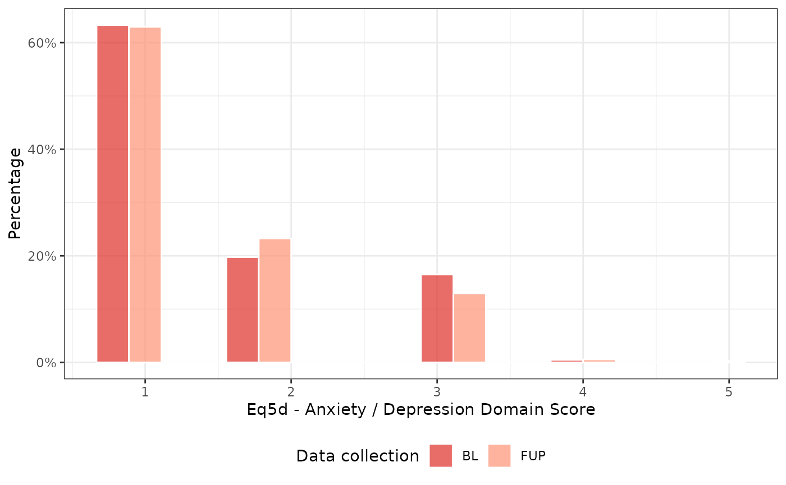
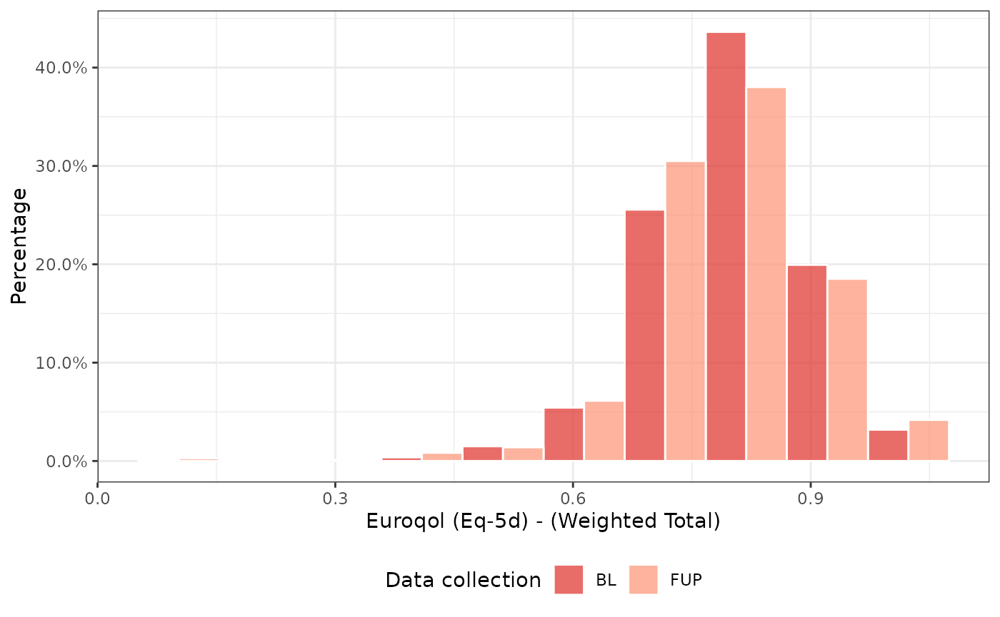

Note: This vignette is illustrated with fake data. The dataset explored in this example should not be used to inform decision-making. Some of the methods illustrated in this EQ-5D vignette are described in more detail in a vignette about scoring AQoL-6D health utility.
The eq5d package provides a toolkit for scoring EQ-5D health utility. The scorz package contains a class and methods that integrate eq5d package tools with the ready4 framework for open and modular mental health system models.
To begin, we ingest an unscored dataset and its data dictionary as a Ready4useDyad. We then add additional details about the dataset (unique identifier and data-collection round variable name and values) by converting the ingested data to a (YouthvarsSeries)[https://ready4-dev.github.io/youthvars/articles/V_02.html] instance.
x <- ready4use::Ready4useRepos(dv_nm_1L_chr = "fakes",
dv_ds_nm_1L_chr = "https://doi.org/10.7910/DVN/W95KED",
dv_server_1L_chr = "dataverse.harvard.edu") %>%
ingest(fls_to_ingest_chr = "ymh_eq5d_dyad_r4",
metadata_1L_lgl = F)
x <- youthvars::YouthvarsSeries(a_Ready4useDyad = x,
id_var_nm_1L_chr = "uid",
timepoint_var_nm_1L_chr = "Timepoint",
timepoint_vals_chr = unique(x@ds_tb$Timepoint))We now use the data and meta-data we have created in the previous steps to create an instance of the ScorzEuroQol5 class. Important arguments to specify when creating a ScorzEuroQol5 instance are country_1L_chr (the country preference weights to use), instrument_version_1L_chr (instrument version) and the itm_var_nms_chr (item variable names - these must be in the exact order that corresponds to the Movement, Self-care, Usual Activities, Pain/Discomfort and Anxiety Depression domains).
y <- ScorzEuroQol5(a_YouthvarsProfile = x,
country_1L_chr = "UK",
instrument_version_1L_chr = "5L",
itm_var_nms_chr = c("eq5dq_MO", "eq5dq_SC", "eq5dq_UA", "eq5dq_PD", "eq5dq_AD"))To calculate EQ-5D adolescent utility scores, use the renew method.
y <- renew(y)We can inspect our updated dataset using the exhibit method.
exhibit(y,
display_1L_chr = "head")| Unique identifier | Data collection round | Date of data collection | Age | Gender (grouped) | Sex at birth | Sexual orientation | Relationship status | Aboriginal or Torres Strait Islander | Culturally And Linguistically Diverse | Region of residence (metropolitan or regional) | Education and employment status | EQ5D - Mobility domain score | EQ5D - Self-Care domain score | EQ5D - Usual Activities domain score | EQ5D - Pain / Discomfort domain score | EQ5D - Anxiety / Depression domain score | Kessler Psychological Distress - 10 Item Total Score | Overall Wellbeing Measure (Winefield et al. 2012) | EuroQol (EQ-5D) - (weighted total) | EuroQol (EQ-5D) - (unweighted total) |
|---|---|---|---|---|---|---|---|---|---|---|---|---|---|---|---|---|---|---|---|---|
| 1 | BL | 2019-10-22 | 14 | Male | Male | Heterosexual | In a relationship | No | No | Metro | Not studying or working | 1 | 1 | 1 | 1 | 2 | 11 | 87 | 0.879 | 6 |
| 2 | BL | 2019-10-17 | 19 | Female | Female | Heterosexual | In a relationship | Yes | Yes | Regional | Studying only | 1 | 2 | 1 | 1 | 1 | 14 | 65 | 0.846 | 6 |
| 2 | FUP | 2020-02-14 | 19 | Female | Female | Heterosexual | In a relationship | Yes | Yes | Regional | Studying only | 3 | 1 | 1 | 1 | 1 | 10 | 71 | 0.850 | 7 |
| 3 | BL | 2020-02-15 | 21 | Female | Female | Other | Not in a relationship | NA | NA | Metro | Studying only | 1 | 1 | 3 | 1 | 1 | 13 | 74 | 0.883 | 7 |
| 3 | FUP | 2020-06-14 | 21 | Female | Female | Other | Not in a relationship | NA | NA | Metro | Studying only | 1 | 1 | 2 | 1 | 1 | 10 | 64 | 0.906 | 6 |
| 4 | BL | 2019-12-14 | 12 | Female | Female | Heterosexual | In a relationship | Yes | Yes | Metro | Not studying or working | 1 | 1 | 1 | 3 | 1 | 18 | 40 | 0.796 | 7 |
To create plots, we use the depict method, supplying the index number of the domain we wish to plot.
depict(y, type_1L_chr = "domain_by_time", var_idcs_int = 5L)
Total EQ-5D scores can also be plotted using the same approach, where var_idcs_int = 1L is used to plot the weighted total distribution.
depict(y, type_1L_chr = "total_by_time", var_idcs_int = 1L)
A composite plot can also be generated.
depict(y, type_1L_chr = "comp_domain_by_time")EQ-5D weighted domain scores